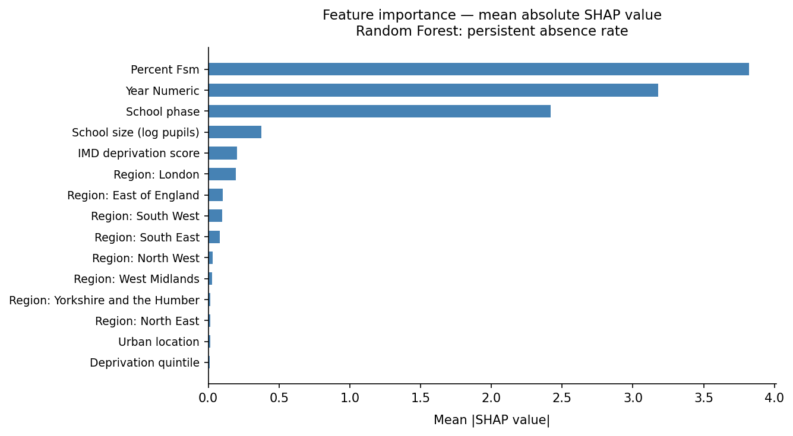
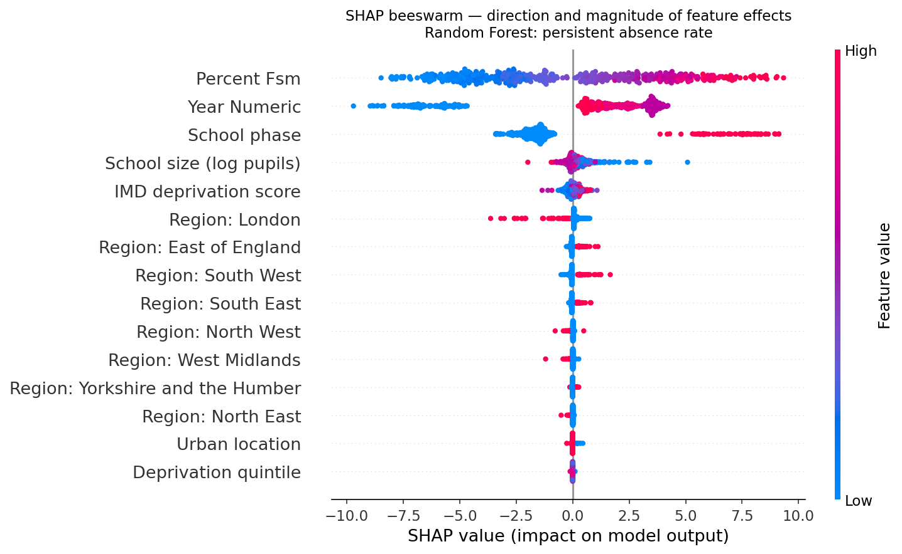
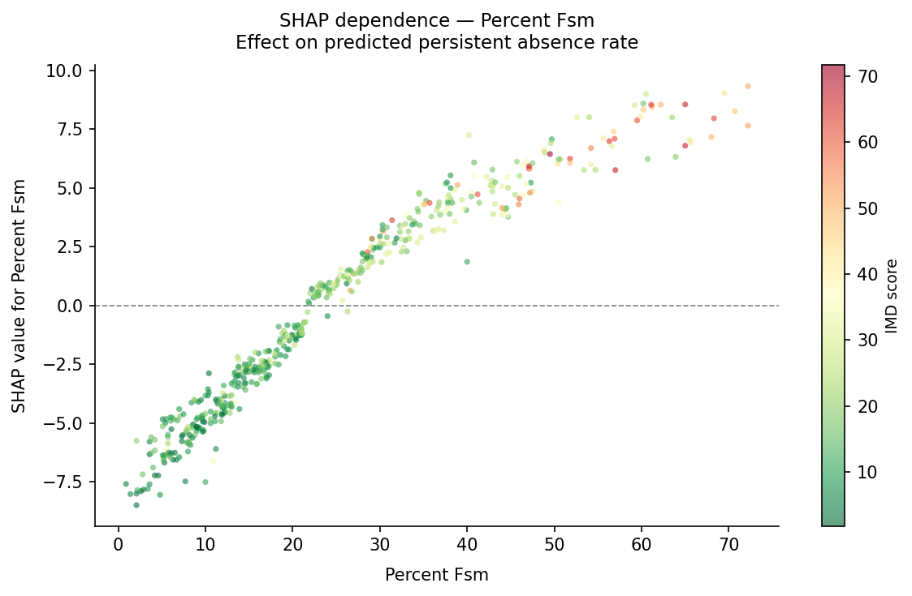
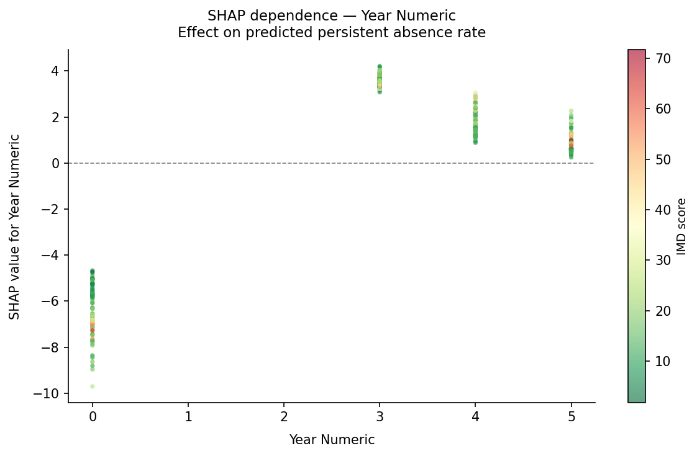
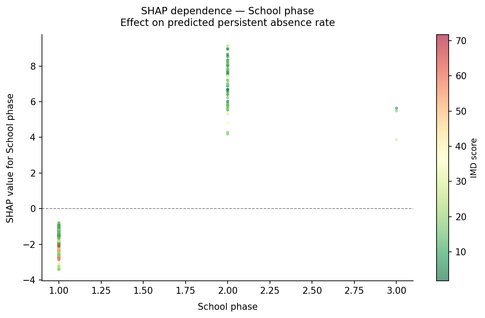
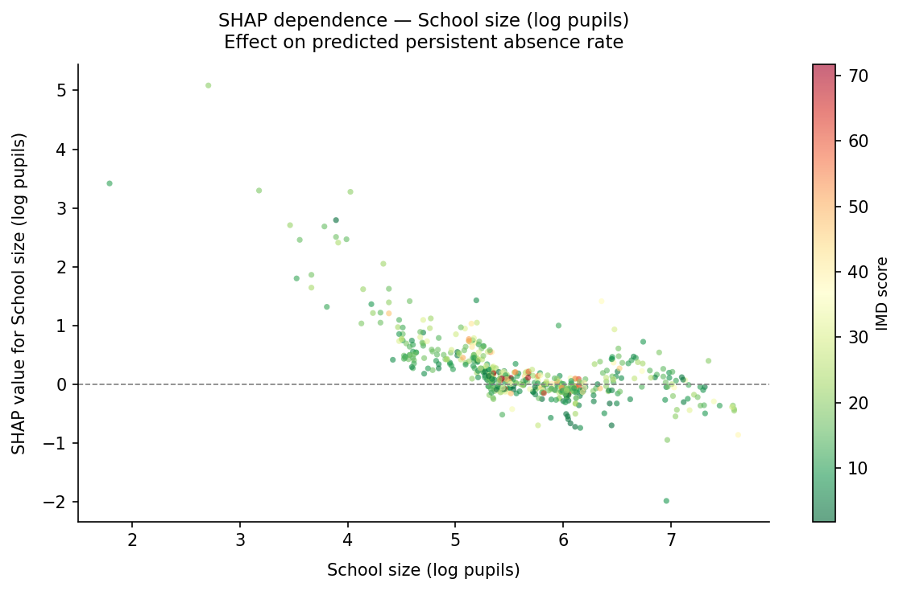
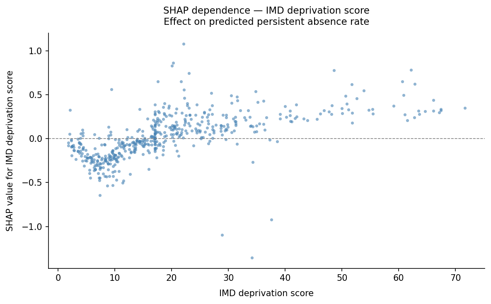
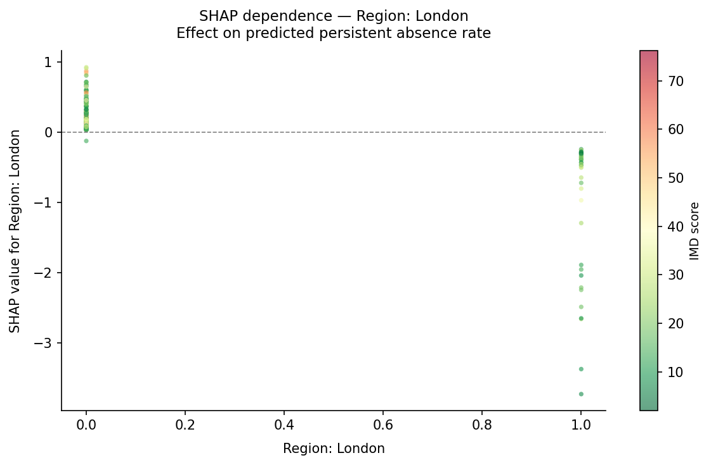

Can neighbourhood deprivation, school characteristics, regional factors, and time predict persistent absenteeism rates in English state schools? A Random Forest panel analysis across 2018–2024.








| Feature | Importance | Share |
|---|---|---|
| percent_fsm | 0.397 | 39.7% |
| year_numeric | 0.298 | 29.8% |
| phase_numeric | 0.209 | 20.9% |
| log_pupils | 0.044 | 4.4% |
| imd_score | 0.021 | 2.1% |
| region_London | 0.013 | 1.3% |
| region_South West | 0.004 | 0.4% |
| region_East of England | 0.003 | 0.3% |
| region_South East | 0.002 | 0.2% |
| region_North West | 0.002 | 0.2% |
| region_West Midlands | 0.002 | 0.2% |
| is_urban | 0.002 | 0.2% |
| imd_quintile | 0.001 | 0.1% |
| region_North East | 0.001 | 0.1% |
Free School Meals eligibility accounts for 39.7% of total feature importance — the sharpest available signal of pupil-level poverty. Individual targeting via FSM outperforms area-level IMD as an intervention criterion.
Year_numeric (29.8%) reflects the post-pandemic absence surge. SHAP values show a sharp structural break: 2018-19 schools receive large negative contributions while 2021-22 is the peak. By 2023-24 absence is declining but still above pre-pandemic levels.
IMD colour coding on the year dependence plot shows the COVID attendance shock was uniform across the deprivation distribution — not disproportionately concentrated in deprived schools. Universal programmes would have been more efficient than area-targeted ones.
Phase_numeric (20.9%) captures that secondary schools have substantially higher persistent absence than primaries, independent of deprivation and time. This reflects a developmental pattern that interventions must account for separately.
IMD score ranks fifth with just 2.1% importance. Area-level deprivation alone is a poor targeting criterion; the FSM eligibility flag is more precise and already available as an administrative data field.
The Random Forest (R² 0.597) beats OLS (R² 0.486) because the panel's temporal structure introduces non-linear interactions — particularly year × phase — that linear regression cannot capture.